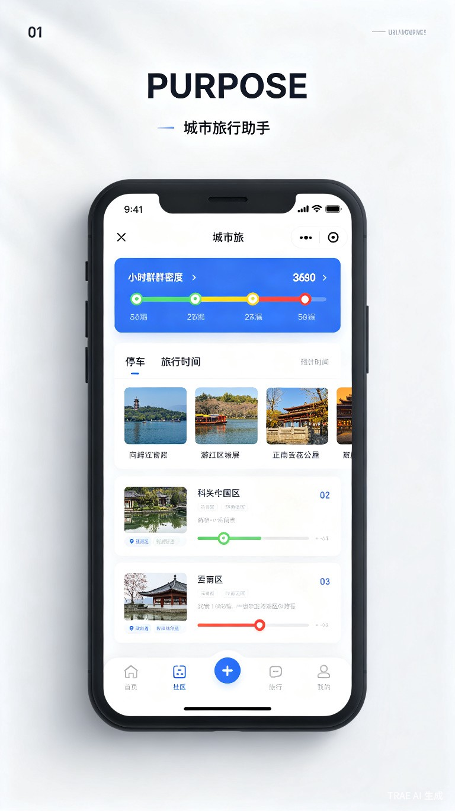

创意概述
城市中的热门景点——无论是古寺庙、历史遗址、动植物园，还是滨水绿地、大型商业中心——每逢节假日便面临停车难、排队久、体验差的困境。游客往往在抵达后才发现停车场已满、景区人满为患，既浪费了时间，也影响了出行心情。
城市出行智选是一款基于实时数据融合的智能出行助手，整合停车场余位、景区人流密度、交通路况等多维信息，帮助用户在出行前做出最优决策，实现"未出门，先知情"。
核心痛点
停车信息不透明
热门景点周边停车场余位信息难以获取，抵达后才发现"车位已满"，只能绕圈寻找或被迫停到很远的地方。
拥挤程度未知
无法提前了解景区实时人流密度，到了才发现"人山人海"，游玩体验大打折扣。
路线规划单一
现有导航只考虑距离和时间，忽略了停车便利性和目的地拥挤度，导致"到了却进不去"。
决策成本高
需要在多个App之间切换查询信息（地图、停车、景区官网），决策效率低下，容易错过最佳出行时机。
解决方案
城市出行智选通过数据融合 + AI预测 + 智能推荐三大核心能力，为用户提供一站式出行决策服务。
核心功能
实时停车导航
显示周边停车场实时余位、收费标准、距离景点步行时间，支持一键导航至最优停车场。
拥挤度热力图
基于多源数据生成景区实时拥挤度指数（畅通/适中/拥挤/饱和），用颜色直观展示。
AI出行建议
根据用户偏好（亲子、情侣、老人等）和实时状况，智能推荐最佳景点和出行时段。
动态路线调整
出行途中实时监控路况和目的地状态，主动推送更优替代方案。
智能提醒
设置目标景点，当拥挤度下降或停车位释放时，第一时间通知用户。
crowd预测
基于历史数据和节假日模式，预测未来2小时内的拥挤趋势，辅助用户规划行程。
数据来源与融合
数据方案分三层设计，确保Demo阶段即可完整运行，同时为长期扩展预留空间。
第一层：Demo阶段直接可用的真实数据
通过聚合数据（juhe.cn）和极速数据（jisuapi.com）API接入，覆盖全国60+城市、10万+停车场，提供实时余位、费用、位置信息，动态数据20分钟更新，免费额度即可支撑Demo运行
通过高德开放平台免费API获取地理编码、路线规划、实时路况及热力图图层，个人开发者每日配额充足
第二层：算法估算的智能数据
基于高德热力图区域人流密度 + 时间段权重 + 天气系数 + 节假日特征，通过规则引擎实时计算拥挤度等级（畅通/适中/拥挤/饱和），数据会随时间动态变化
基于历史同期均值 + 时间段权重 + 天气系数的统计规则模型，生成未来2小时拥挤趋势曲线，Demo阶段无需深度学习模型即可展示预测能力
第三层：未来扩展的真实对接
对接景区预约系统、入口闸机数据，获取精确客流（扩展阶段与景区管理方合作）
通过数据交易平台采购匿名化基站数据，提升人流密度估算精度（生态阶段）
分析微博、小红书等平台公开签到和发帖热度，作为实时感知的补充信号（扩展阶段）
| 数据类型 | Demo阶段方案 | 数据来源 | 成本 |
|---|---|---|---|
| 停车场余位 | 真实API | 聚合数据 / 极速数据 | 免费额度 |
| 地图与导航 | 真实API | 高德开放平台 | 免费 |
| 景区拥挤度 | 算法估算 | 高德热力图 + 规则引擎 | 免费 |
| 人流预测 | 规则模拟 | 时间 + 天气 + 节假日特征 | 免费 |
| AI推荐 | 简单匹配 | 用户偏好 + 实时状态 | 免费 |
应用场景
场景一：周末亲子出游
王先生计划周六带家人去市郊动物园。打开"城市出行智选"，看到动物园当前拥挤度为"饱和"，但系统预测下午2点后人流将下降。同时推荐了一个距离入口仅200米、当前有47个空位的停车场。王先生选择下午2:30出发，避开高峰，顺利入园。
场景二：节假日古镇游览
李女士五一假期想去周边古镇游玩。系统显示目标古镇当前拥挤度"极高"，但推荐了同一区域内另一个风景相似、拥挤度"适中"的古镇，并提供了沿途3个备选停车场的实时余位。李女士调整目的地，获得更舒适的游玩体验。
场景三：商务访客停车
张先生第一次去客户公司所在的商业区，对周边停车情况不熟悉。系统根据会议时间，提前30分钟推送最优停车场位置、预计步行时间和费用，并支持室内导航直达电梯口，让张先生准时到达。
场景四：老年人 temple 参观
赵阿姨和老伴想去寺庙上香。系统考虑到老年人行动不便，优先推荐距离寺庙入口最近的无障碍停车位，并显示当前拥挤度是否适合缓慢步行游览。当拥挤度过高时，建议改日或推荐同类型替代景点。
产品原型

界面设计要点
首页 - 附近推荐
基于用户位置，展示周边景点卡片，每张卡片显示实时拥挤度（绿/黄/红）、最近停车场余位、预计车程。
地图模式
热力图叠加模式，直观展示全城景点拥挤分布，支持筛选景点类型（寺庙/公园/商业中心等）。
详情页
景点详细信息，包括实时拥挤度趋势图、周边停车场列表及导航、用户评论、最佳游览时段建议。
我的行程
收藏感兴趣的景点，设置出行提醒，查看历史出行记录和偏好分析。
技术实现
技术架构
跨平台覆盖
高并发API服务
时空数据存储
人流预测模型
导航与地理编码
多源数据清洗
核心算法
| 算法模块 | 功能描述 | 技术方案 |
|---|---|---|
| 拥挤度计算 | 综合多源数据生成统一拥挤指数 | 加权融合算法 + 异常值过滤 |
| 人流预测 | 预测未来2小时人流趋势 | LSTM时间序列模型 |
| 停车推荐 | 最优停车场排序 | 多目标优化（距离+费用+余位） |
| 路线规划 | 综合考虑路况和目的地状态 | A*算法 + 实时权重调整 |
| 个性化推荐 | 基于用户画像的景点推荐 | 协同过滤 + 内容推荐 |
创新亮点
🔄 多源数据融合
首次将停车场数据、运营商人流、地图路况、景区闸机、社交媒体五类数据源融合，构建全面的城市出行感知网络。
🤖 AI预测能力
不仅展示当前状态，更能预测未来2小时趋势，让用户"提前知道"而不是"到了才发现"。
🎯 场景化推荐
针对亲子、老人、情侣等不同人群，提供差异化的推荐策略（如优先无障碍设施、安静环境等）。
🌐 开放生态
提供标准化API接口，支持第三方景区、停车场、导航应用接入，共建城市出行服务生态。
社会价值
直接价值
- 减少游客因停车和拥挤问题产生的焦虑和时间浪费
- 提升景区管理效率，实现客流有序引导
- 降低城市交通拥堵，减少无效绕行产生的碳排放
延伸价值
- 为城市交通管理部门提供数据支撑，辅助决策
- 促进冷门景点和优质替代目的地的发现，分流热门景区压力
- 为商业停车场提升周转率和收益
- 为老年人、残障人士等特殊群体提供更友好的出行信息
商业模式
城市出行智选采用"B端服务为主、C端免费使用"的模式，核心逻辑是：C端用户免费使用积累流量和数据，B端付费获取精准导流和数据分析服务。
停车场CPC导流
用户通过小程序点击导航至某停车场，停车场按每次有效点击付费。对停车场而言，这是精准的"找车位"场景导流，转化率远高于普通广告。
景区客流分析报告
向景区管理方出售客流趋势分析、游客来源分布、高峰时段预测等数据报告，帮助景区优化运营调度和票务策略。
商圈广告位
在景点详情页和推荐列表中，为周边餐饮、酒店、零售商户提供精准广告位，按曝光或点击计费。
地图/平台服务嵌入
将拥挤度和停车数据服务打包为API，嵌入高德、百度等地图平台的出行场景中，按调用量收费，形成合作而非竞争关系。
发展路线
10个热门景点类型
基础查询功能
AI预测上线
个性化推荐
第三方接入
数据服务输出
交通调度联动
碳中和出行
竞品分析
| 产品 | 停车信息 | 拥挤度 | AI推荐 | 覆盖范围 |
|---|---|---|---|---|
| 高德地图 | 部分支持 | 无 | 基础路线 | 全国 |
| 百度地图 | 部分支持 | 无 | 基础路线 | 全国 |
| 各地景区小程序 | 无 | 单一景区 | 无 | 单一城市 |
| 城市出行智选 | 全面实时 | 多源融合 | 场景化AI | 跨城统一 |
团队与实现
本项目适合由 2-3人小组 在初赛周期内完成MVP开发：
- 产品经理：负责需求梳理、UI设计、用户测试
- 前端开发：负责小程序/前端界面开发
- 后端开发：负责API接口、数据对接、算法实现
借助 TRAE Work 进行需求文档撰写和项目管理，利用 TRAE IDE 加速代码开发和调试，可显著提升开发效率。
结语
城市出行智选不仅是一个工具，更是城市公共服务数字化的一次创新实践。通过AI技术让出行信息透明化、决策智能化，我们能让每一位市民和游客都享受到更便捷、更从容的城市生活。
这正契合了 TRAE AI 创造力大赛"社会服务 · 造种新体验"的赛道主题——用技术创造更友好的社会服务体验。